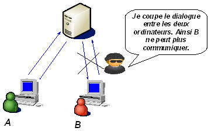
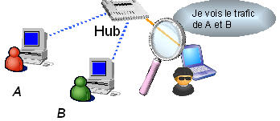
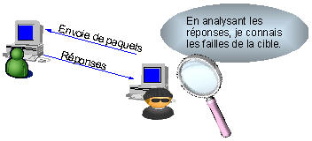
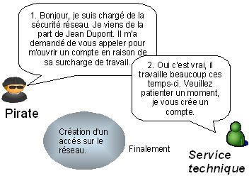
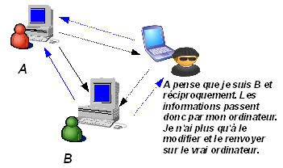
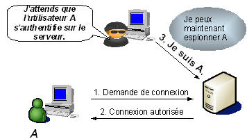

Bienvenue sur ce site dédié au piratage informatique dans le cadre d'un projet de l'ISIMM (LA 1 INFO). Ce site a été créé par Houssem Sakli. |
Le Piratage Informatique |
|
|
Bienvenue sur ce site dédié au piratage informatique dans le cadre d'un projet de l'ISIMM (LA 1 INFO). Ce site a été créé par Houssem Sakli. |
Le Piratage Informatique |
|
Une attaque par déni de service (en anglais Denial of Service, DoS) est une attaque qui a pour but de mettre hors jeu le système qui est visée. Ainsi, la victime se voit dans l'incapacité d'accéder à son réseau. Ce type d'attaque peut aussi bien être utilisé contre un serveur d'entreprise qu'un particulier relié à internet. Tous les systèmes d'exploitations sont également touchés : Windows, Linux, Unix...

Etre à jour dans les correctifs logiciels (patch).
http://windowsupdate.microsoft.com
http://www.securityfocus.com
Le reniflage (en anglais Sniffing) est une technique qui consiste à analyser le trafic réseau.
Lorsque deux ordinateurs communiquent entre eux, il y a un échange d'informations (trafic). Mais, il est
toujours possible qu'une personne malveillante récupère ce trafic. Elle peut alors l'analyser et y trouver
des informations sensibles.
Exemple: Soit une entreprise possédant 100 ordinateurs reliés entre eux grâce à un hub.
Maintenant, si un pirate écoute le trafic réseau entre 8h et 10h (heure de connection du personnel), il
pourra lire tous les noms d'utilisateurs ainsi que leur mot de passe.

Le scanning consiste à balayer tous les ports sur une machine en utilisant un outil appelé scanner. Le scanner envoie
des paquets sur plusieurs ports de la machine. En fonction de leurs reactions, le scanner va en déduire si les ports sont ouverts.
C'est un outil très utile pour les hackers. Cela leur permet de connaitre les points faibles d'une machine et ainsi de savoir par
où ils peuvent attaquer. D'autant plus que les scanners ont évolué. Aujourd'hui, ils peuvent déterminer le système d'exploitation
et les applications associées aux ports.

Le social engineering est l'art de manipuler les personnes. Il s'agit ainsi d'une technique permettant
d'obtenir des informations d'une personne, qu'elle ne devrait pas donner en temps normal, en lui donnant des bonnes
raisons de le faire. Cette technique peut se faire par téléphone, par courrier électronique, par lettre écrite, ...
Cette attaque est souvent sous estimée puisqu'elle n'est pas d'ordre informatique. Pourtant, une attaque
par social engineering bien menée peut se réveler très efficace. Elle n'est donc pas à prendre à la légère.

Le crackage des mots de passe consiste à deviner le mot de passe de la victime. Malheureusement, beaucoup
d'utilisateurs mal avertis de cette technique mettent des mots de passe évidents comme leur propre prénom ou
ceux de leurs enfants. Ainsi, si un pirate, qui a espionné sa victime auparavant, teste quelques mots de passe comme le
prénom des enfants de la victime, il aura accés a l'ordinateur. D'où l'utilité de mettre des bons mots de passe.
Mais même les mots de passe les plus robustes
peuvent etre trouvés à l'aide de logiciels spécifiques appelés craqueur (John the ripper, L0phtCrack pour Windows).
Comment ça marche?
Les craqueurs de mots de passe s'appliquent souvent à un fichier contenant le nom des utilisateurs ainsi que leur mot de passe encrypté.
Ces fichiers sont nécessaires pour permettre l'authentification sur un système. L'encryptage des mots de passe s'effectue à l'aide d'une
fonction de hachage. Les fonctions de hachage sont des fonctions univoques, c'est-à-dire qu'il est impossible de les inverser
pour décrypter un mot de passe encrypté. Une autre particularité importante des fonctions de hachage est que deux mots de passe
différents auront forcément un hachage différent. Ainsi, il est impossible de décrypter un mot de passe encrypté.
En revanche, il est possible d'encrypter un mot au moyen de cette fonction et de comparer le résultat avec le mot de passe encrypté.
S'il y a correspondance, on a deviné le mot de passe. Mais, il est fastidieux d'encrypter des milliers de mots pour trouver
les mots de passe. C'est là qu'intervient l'utilité d'un craqueur.
Ces logiciels peuvent tester des mots de passe selon trois méthodes:
Le fichier contenant les mots de passes encriptés est donc à protéger. Chaque système d'exploitation à sa méthode. Expliquons les méthodes employées par Windows NT, et Unix.
Un mot de passe robuste doit satisfaire à plusieurs critères:
L'usurpation (en Anglais Spoofing) consiste à se faire passer pour quelqu'un d'autre. Il y a beaucoup d'utilité pour un pirate d'usurper une identité. Voici quelques exemples d'usurpations, mais ce ne sont pas les seules:
Généralement, quand on parle d'usurpation ou de spoofing, on parle de l'usurpation de l'adresse IP.
On ne peut pas empêcher quelqu'un d'usurper une identité. En revanche, il faut à tout prix être sûr de l'identité
de la machine avec laquelle on dialogue.
Utiliser des protocoles sécurisés comme ssh qui empêche le spoofing.
Man in the Middle signifie l'homme du milieu. Cette attaque a pour but de s'insérer entre deux ordinateurs qui communiquent.
Soient deux ordinateurs A et B voulant dialoguer. Maintenant, si un pirate décide de se faire passer pour l'ordinateur A auprès de B
et de B auprès de A, ainsi, toute communication vers A ou B passera par le pirate, l'homme du milieu.

Le pirate peut donc intercepter tout le trafic, à savoir les informations sensibles comme les mots de passe. Mais, pire encore,
le pirate peut modifier le trafic avant de le renvoyer vers l'autre ordinateur.
Ainsi, si vous voulez commander un livre sur internet à 10 euros, et que le pirate change votre commande, vous pouvez très vite vous retrouver
à dépenser des milliers d'euros.
Les sites sécurisés commencent par "https" au lieu de "http". Il y a également un cadenas en bas de votre navigateur.
Un pirate peut craquer (cible) le mot de passe de la session. Mais si vous choisissez un mot de passe robuste, cela lui prendra
beaucoup de temps. Alors pourquoi ne pas attendre que la victime se connecte sur la session et prendre sa place ? Ainsi, le pirate
contourne le processus d'authentification. Et justement, il le fait, c'est le principe du détournement de session (en anglais hijacking).
Ensuite, s'il veut pouvoir dialoguer avec le serveur, il doit mettre hors-jeu la victime. Pour cela, il peut lui lancer une attaque
par déni de service (cible). Mais, il peut aussi se mettre en écoute et enregistrer tout le trafic en espérant recueillir des informations
sensibles comme des mots de passe.

Si le pirate possède des informations sensibles comme un nom d'utilisateur et son mot de passe, il pourra alors revenir sur le système lorsqu'il le souhaitera a l'aide d'une backdoor. Pire encore, si la machine possède des liens d'approbation, l'attaquant en bénéficiera. Et il sera dur d'identifier que le système est compromis puisqu'il utilise le compte d'une personne autorisée. D'où l'importance de détecter cette attaque.
Un débordement de tampon (en anglais Buffer OverFlow ou BoF) est une attaque tres utilisée des pirates. Cela consiste à utiliser un programme résidant sur votre machine en lui envoyant plus de données qu'il n'est censé en recevoir afin que ce dernier exécute un code arbitraire. Il n'est pas rare qu'un programme accepte des données en paramètre. Ainsi, si le programme ne vérifie pas la longueur de la chaîne passée en paramètre, une personne malintentionnée peut compromettre la machine en entrant une donnée beaucoup trop grande.
Les données entrées par l'utilisateur sont stockées temporairement dans une zone de la mémoire appelée tampon (en anglais buffer).
Prenons l'exemple d'un logiciel qui demande votre prénom. En admettant que le programme prévoit
dix caractères pour ce dernier et que l'utilisateur en mette vingt. Il y aura débordement de tampons puisque les dix derniers
caractères ne seront pas stockés dans la bonne variable mais dans le tampon pouvant provoquer un crash de la machine. Mais, un pirate
exploite cette faille malignement et parvient à se procurer d'un accés à la machine avec des droits identiques à celle du logiciel.
Pour comprendre comment exploiter cette faille, visiter l'article de référence en matière de débordement de tampon :
Smashing the stack for fun and profit par Alephone, Phrack 49.
Malheureusement, vous ne pouvez pas y faire grand chose. En effet, le principe de cette attaque est différent des autres, dans le sens où ce n'est pas la protection de l'ordinateur qui vous protégera d'un débordement de tampon puisqu'elle utilise le manque de rigueur de la part des programmeurs de logiciels en raison du manque de temps.